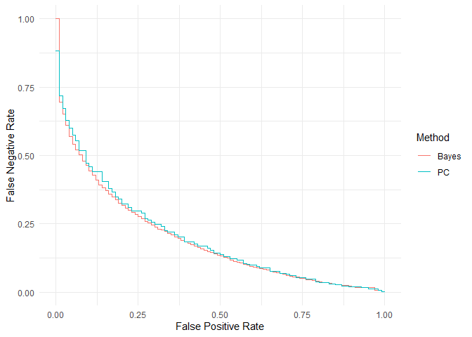

The goal of fahb is to help with clinical trial feasibility assessment via hierarchical Bayesian recruitment models, fitted to (internal or external) pilot date. It can be used at the design stage to optimise the pilot and any pre-specified decision rules to guide progression, and at the analysis stage to produce a probabilistic prediction of the time until the main trial recruits to target.
Installation
Install the released version of fahb from CRAN:
install.packages("fahb")Or you can install the development version of fahb from GitHub with:
# install.packages("devtools")
devtools::install_github("DTWilson/fahb")Example
Suppose we are planning an internal pilot for a trial which aims to recruit N = 320 participants from m = 20 sites, and that we expect recruitment to complete in three years. The pilot analysis will happen at t = 0.5 years, and we would class the trial as infeasible if recruitment took longer than rel_thr = 1.2 times the expected recruitment time.
The variables N, m, t and rel_thr define the design variables. For the model parameters, for the purpose of illustration we use the package defaults (but see the vignette and the associated paper for more discussion of these). To use fahb we first encode all design variables and model parameters in a fahb_problem object, then run some simulations via forecast() before finding possible decision rules and the operating characteristics they lead to:
library(fahb)
problem <- fahb_problem(N = 320, m = 20, t = 0.5, rel_thr = 1.2)
# Run the simulations
problem <- forecast(problem)
# Find some candidate decision rules are their OCs
design <- fahb_design(problem)
print(design)
#> Standard progression criteria
#>
#> FPR FNR n_p m_p r_p
#> 1 0.0 0.82817058 17.81878829 -0.059458005 9.6590446
#> 11 0.1 0.45825809 9.57670582 1.334793215 6.6483566
#> 21 0.2 0.31559939 6.90517099 0.182386148 6.0045943
#> 41 0.4 0.18030282 1.59558082 0.759740721 5.6010379
#> 51 0.5 0.12835116 2.70338476 1.696370342 4.5998899
#> 71 0.7 0.05625781 0.14306472 0.904175281 3.5567570
#> 81 0.8 0.03681067 -0.30186503 0.937890251 2.8416713
#> 91 0.9 0.02222531 -0.90403448 -0.022824150 1.9307604
#> 101 1.0 0.00000000 0.01221748 0.008838253 -0.7620012
#>
#> Bayesian approximation
#>
#> FPR FNR T_p
#> 1 0.0 1.00000000 1.441843
#> 11 0.1 0.42366995 3.123216
#> 21 0.2 0.31309904 3.298833
#> 41 0.4 0.16335602 3.594781
#> 51 0.5 0.11543270 3.721615
#> 71 0.7 0.05723017 3.916746
#> 81 0.8 0.03653285 4.001302
#> 91 0.9 0.02139186 4.085859
#> 101 1.0 0.00000000 4.554172
#>
#> FPR - False Positive Rate
#> FNR - False Negative Rate
#>
#> n_p, m_p, r_p - Probabilistic thresholds for standard
#> progression criteria on the number recruited,
#> number of sites opened, and the recruitment rate
#> (participants per site per year) respectively
#>
#> T_p - Bayesian decision rule threshold for the posterior predictive
#> expected time until full recruitment
plot(design)
Two types of decision rules are considered here. Firstly, we consider rules which take the same form as the standard progression criteria suggested by the NIHR. In the table output, n_p is a minimum number of participants recruited, m_p is a minimum number of sites opened, and r_p is a minimum rate of recruitment (participants per site-year), and we progress to the main trial only if all of these thresholds are met.
The second type of decision rules is defined by T_p, the maximum expected time until full recruitment conditional on the pilot data. We progress to the main trial only if the actual posterior predictive expectation is lower than this threshold.
Decision rules of both types are characterised by their false positive (FPR) and false negative (FNR) rates. These are estimated via simulation by comparing the decisions made with the underlying feasibility, as determined by the threshold rel_thr. For example, we can attain FPR = 0.15 and FNR = 0.34 if we proceed only if we recruit at least participants from at least site, with an overall rate of at least participants per site-year. We can get slightly better operating characteristics if we use a Bayesian progression rules instead. If we want to improve the pilot further we can increase the design variable t_int so that the internal pilot will have more data.
Temporary Windows installation issue (September 2026).
The current CRAN versions of rstan and StanHeaders may be incompatible on Windows (rstan 2.32.7 with StanHeaders 2.39.1), causing Stan model compilation to fail. This also causes the Windows-release GitHub Actions check for this package to fail. This is an upstream issue rather than a failure in the package itself.
As a temporary workaround, Windows users experiencing Stan compilation errors can install the compatible StanHeaders 2.32.10 release. The issue is expected to disappear once a compatible updated version of rstan is available from CRAN.
remotes::install_version(
"StanHeaders",
version = "2.32.10",
repos = "https://cloud.r-project.org"
)